Your browser doesn't support the features required by impress.js, so you
are presented with a simplified version of this presentation.
For the best experience please use the latest Chrome, Safari, or Firefox 10.

Le plan
- Un peu d'Histoire
- Les concepts fondateurs
- Une présentation générale de la Toolbox
- La stratégie Docker Inc
- Les paradigmes promus par Docker
- De nouvelles problématiques
- L'écosystème Docker
- Quelques perspectives
Un peu d'Histoire : le synopsis
- Bio Solomon Hykes
- Origine du projet
- La start-up qui aurait du être française
- Choix du Go
- Evolution éclair de l'adoption
- Un soupçon de stats
Un peu d'Histoire : l'ère dotCloud
- 2006 - Solomon Hykes diplômé de l'Eptitech
- 2008 - création de dotCloud avec Sébastien Pahl
- Aucun finacement trouvé parmi les business angels français
- Le 1er virage : un changement géographique
- 2010 - Incubation au sein de Y Combinator
- Les start-up de Y Combinator comme early adopters
- "Go, c'est un peu la Suisse des langages modernes"
- 2011 - implantation dans la Silicon Valley
- Demandes récurrentes d'accès à des briques légo du socle dotCloud

Un peu d'Histoire : l'ère Docker
- Le 2ème virage : un changement stratégique
- Modularisation des services internes du PaaS doCloud
- 2013 - ouverture de Docker à l'open source
- Mars 2013 - lancement de Docker Hub
- Septembre 2013 - Red Hat l'intègre à OpenShift
- Fin 2014 - Adoption par Microsoft, Google, Amazon, IBM
- Septembre 2015 - 40% des usages en production
- Novembre 2015 - 1.2 milliards de pulls
- Février 2016 - 2 milliards de pulls / 7000 par min
- Democratisation des PaaS et Caas privés

Les concepts fondateurs
- Une première approche
- L'allégorie du container
- Le slogan devOPS
- Le container linux LXC
Concepts fondateurs : Une première approche
- Un mode de virtualisation léger et rapide
- Basé sur les containers linux LXC
- Une execution isolée
- Avec maitrise des flux (port, montage disque)
- Un mécanisme de gestion de configuration
- Avec des scripts d'installation versionnés
- Un outil de déploiement simple et intégré
- Avec un dépôt central des images à installer
Concepts fondateurs : L'allégorie du container
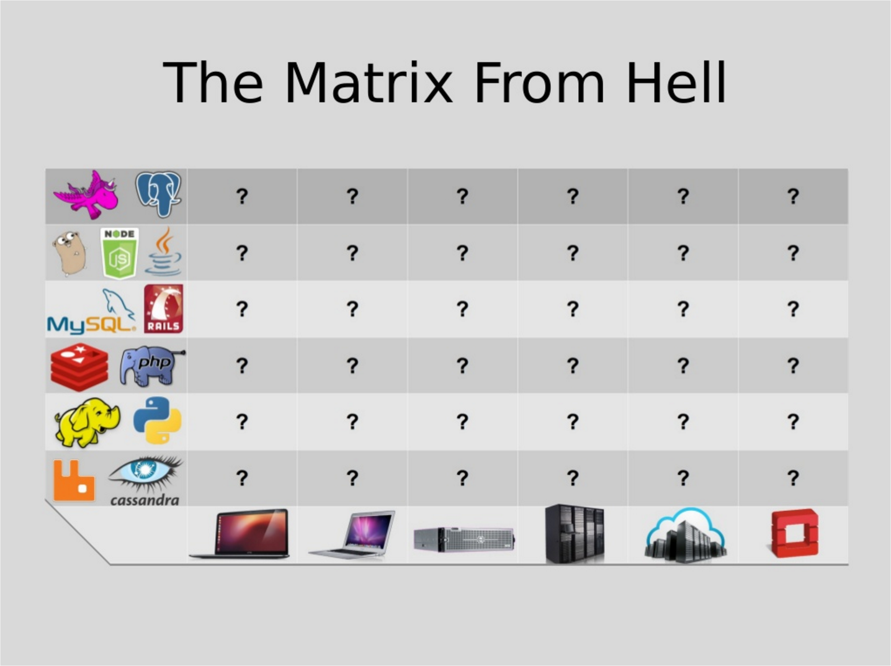
Concepts fondateurs : L'allégorie du container
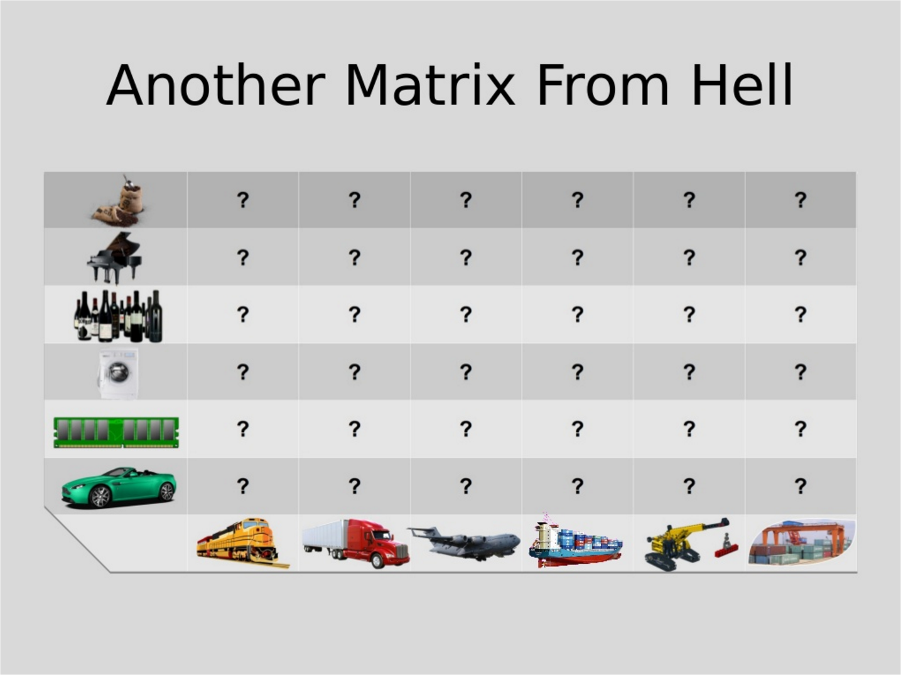
Concepts fondateurs : L'allégorie du container
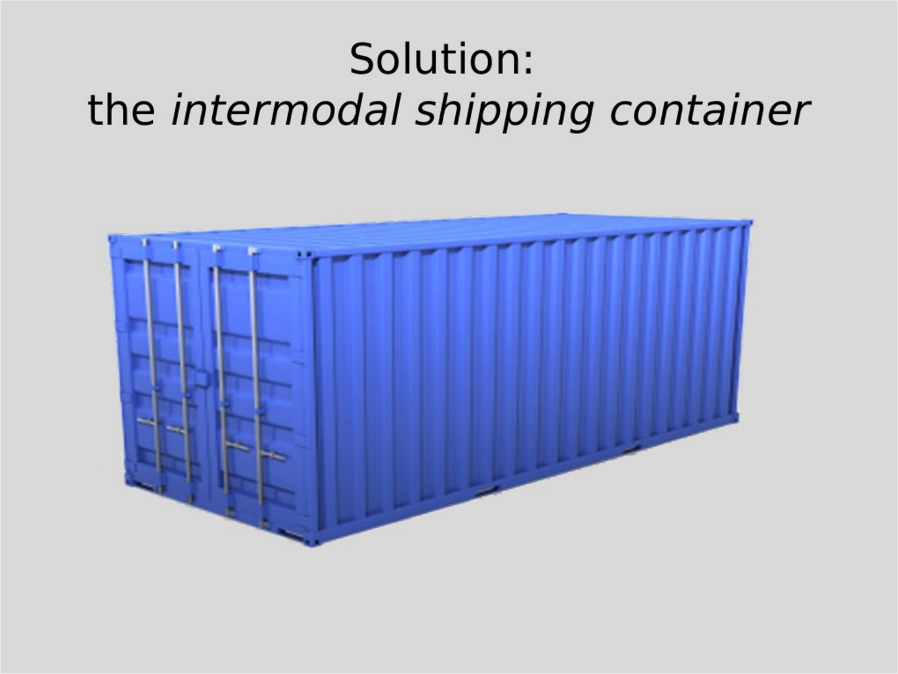
Concepts fondateurs : L'allégorie du container
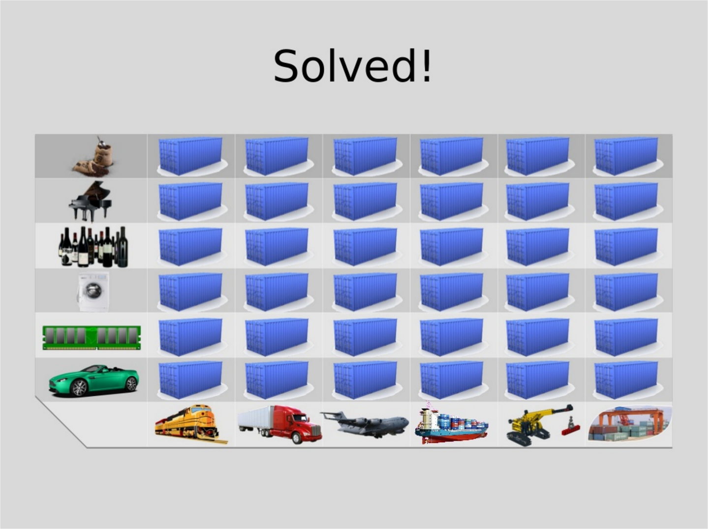
Concepts fondateurs : L'allégorie du container

Concepts fondateurs : L'allégorie du container
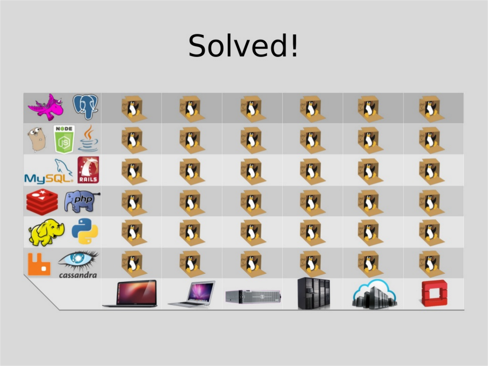
Concepts fondateurs : L'allégorie du container
Double abstraction du container
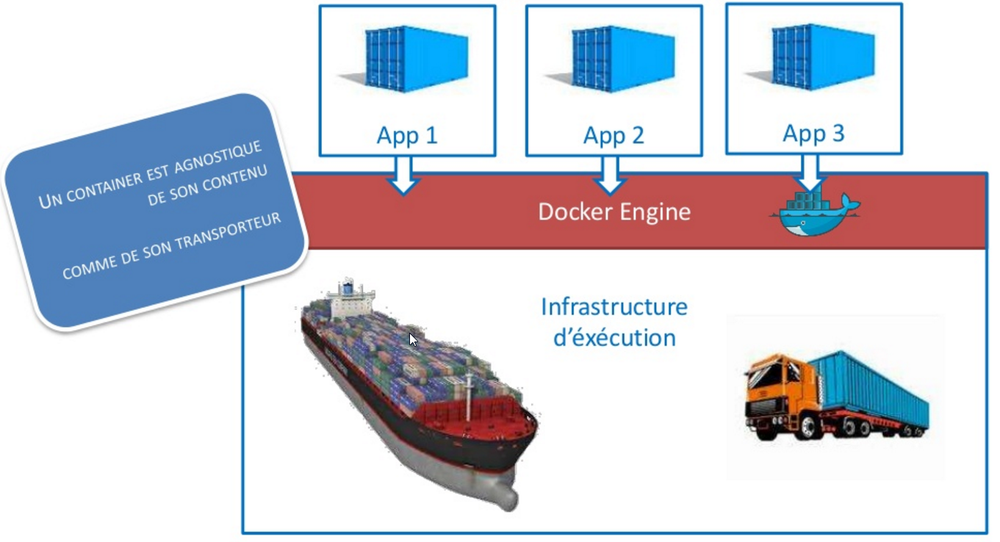
Concepts fondateurs : L'allégorie du container
Double abstraction du container Docker
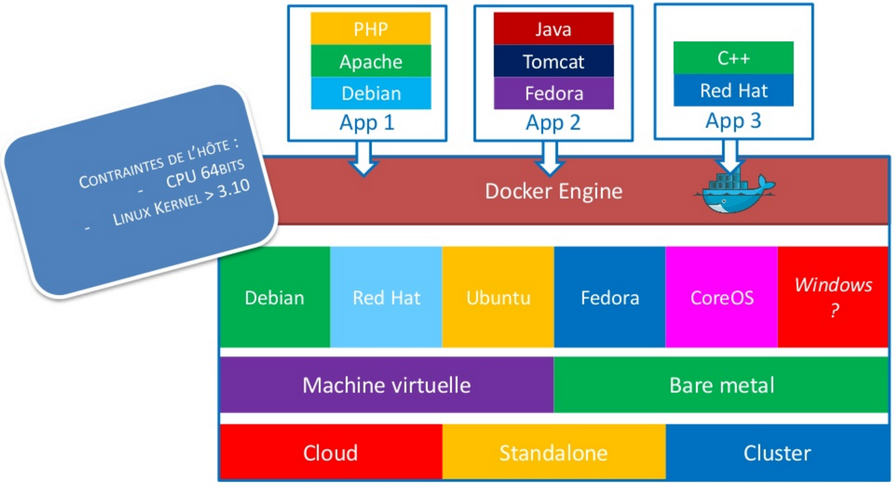
Concepts fondateurs : Le slogan devOPS
"Build, ship and run any app, anywhere"
 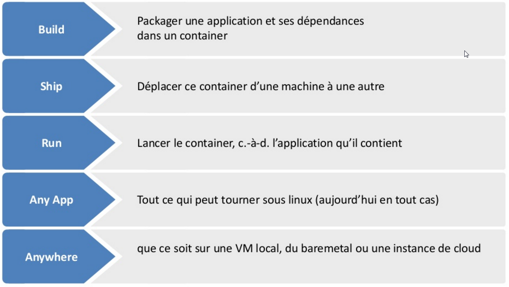
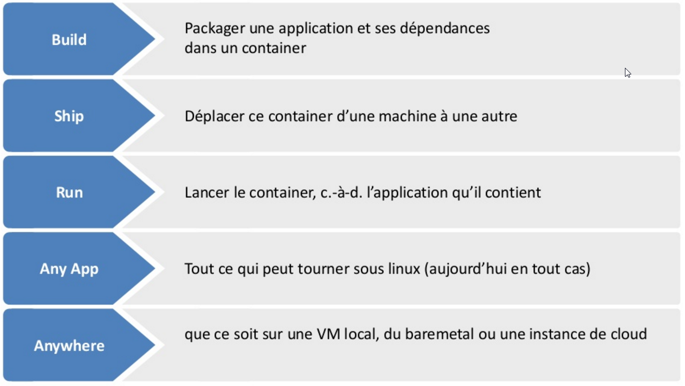
Concepts fondateurs : Le container linux LXC
Container vs VM

- Une technologie Linux-only
- Le kernel linux de l'hôte partagé avec les containers
- Un container = un processus linux isolé sur un hôte linux
La Toolbox
- Une présentation
- La Registry comme écrin
- L'Engine
- Un Dockerfile a son image
- Le Compose pour sa palette
- Le Swarm
- La Machine
- Le Kitematic
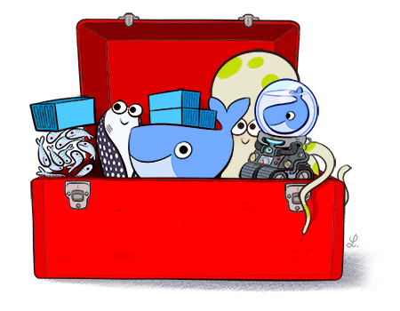
La Toolbox : Une présentation
- Briques Open Source sous licence Apache V2
- le mantra Docker: “batteries included but swappable
La Toolbox : Une présentation
L'environnement d'execution Linux
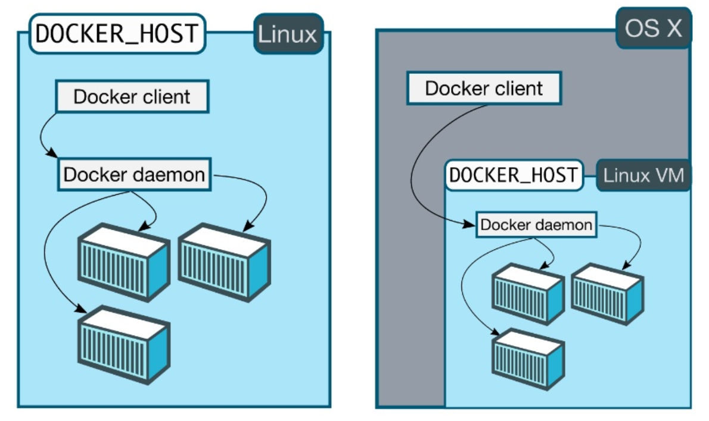
La Toolbox : Une présentation
Le cycle de vie
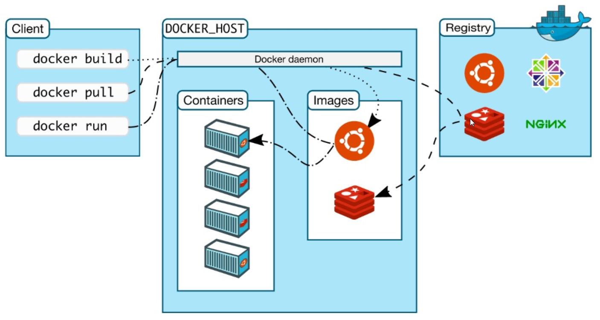

La Toolbox : La Registry comme écrin
- Une présentation
- La Registry comme écrin
- L'Engine
- Un Dockerfile a son image
- Le Compose pour sa palette
- Le Swarm
- La Machine
- Le Kitematic
La Toolbox : La Registry comme écrin
Qu'est-ce que la Registry ?
- Projet Open source Distribution sous licence Apache V2
- Un lieu central ou stocker et distribuer des images Docker
- Stocke les différentes couches d'une image
- Stocke la description permettant de construire une image
- Expose une API aux clients Docker
- En V2 emet des notifications webhook (autoredeploy )
- Docker Hub: registry SaaS (images publiques gratuites )
- Docker Trusted Registry: version on-premise de Docker Hub
La Toolbox : L'Engine
- Une présentation
- La Registry comme écrin
- L'Engine
- Un Dockerfile a son image
- Le Compose, la palette de l'achitecte
- Le Swarm
- La Machine
- Le Kitematic

La Toolbox : L'Engine
Les commandes de base

La Toolbox : Un Dockerfile à son Image
- Une présentation
- La Registry comme écrin
- L'Engine
- Un Dockerfile a son image
- Le Compose pour sa palette
- Le Swarm
- La Machine
- Le Kitematic
La Toolbox : Un Dockerfile à son Image
Qu'est-ce qu'une image ?
- Identifiée par organisation/nom:version
- Un empilement de couches
- Février 2016 : Hykes annonce le portage des images officielles sur Alpine
La Toolbox : Le Compose pour sa palette
- Une présentation
- La Registry comme écrin
- L'Engine
- Un Dockerfile a son image
- Le Compose pour sa palette
- Le Swarm
- La Machine
- Le Kitematic

La Toolbox : Le Compose pour sa palette
- Anciennement Fig
La Toolbox : Le Swarm
- Une présentation
- La Registry comme écrin
- L'Engine
- Un Dockerfile a son image
- Le Compose pour sa palette
- Le Swarm
- La Machine
- Le Kitematic
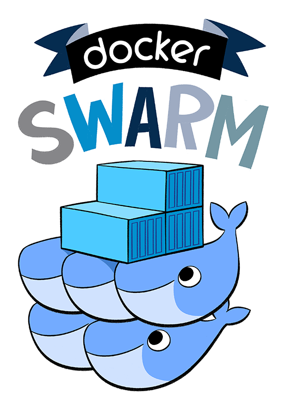
La Toolbox : La Machine
- Une présentation
- La Registry comme écrin
- L'Engine
- Un Dockerfile a son image
- Le Compose pour sa palette
- Le Swarm
- La Machine
- Le Kitematic

La Toolbox : Le Kitematic
- Une présentation
- La Registry comme écrin
- L'Engine
- Un Dockerfile a son image
- Le Compose pour sa palette
- Le Swarm
- La Machine
- Le Kitematic
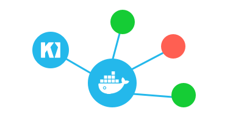
La Toolbox: Execution Plateform
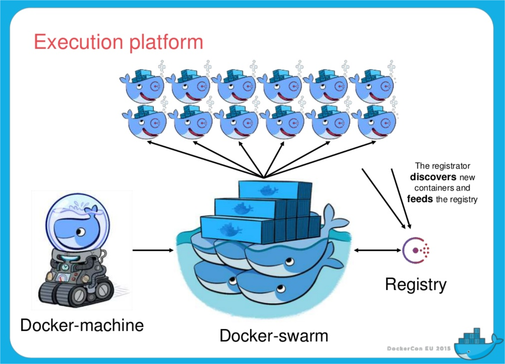
La stratégie commerciale et la standardisation
- Offre commerciale
- Plumbing
- Open Std.
Les paradigmes promus par Docker
- devOPS
- Dynamic paritionning
- Immutable infrastructure
- Pets vs Cows
- Phoenix servers
- Microservices / WOA
- Infrastructure as code
- Horizontal scaling
De nouvelles problématiques
- Discovery backend
- Serice discovery
- Leader election
- Data volume container
- Volume des images
- ...
L'écosystème Docker
- Discovery backend : Etcd, Zookeeper, Consul
- Service discovery : Registrator
- Plugins volume : Flocker
- Plugins network : Flannel, Weave
- Log : Logspoud
- Cluster : Mesos
- Orchestration : Kubernetes, Tutum/Docker cloud, Shippyard, Tsuru; Rancher
- Hosts : CoreOS, Atomic, Boot2Docker
Quelques perspectives
- ...